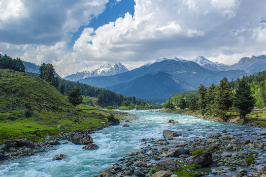
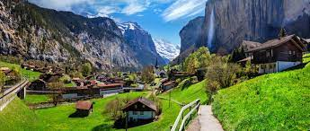
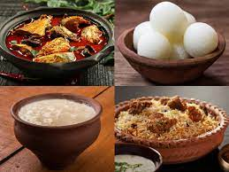

Welcome to my diary! Join me as I travel the world and taste delicious
food. I'll share my experiences, tips, and favorite discoveries to
inspire your own adventures. Whether you love exploring new places,
trying different cuisines, or hunting for great buys, there's
something here for you!
Exploring the Enchanting Beauty of Kashmir
Nestled in the lap of the Himalayas, Kashmir is a region of
breathtaking beauty and rich cultural heritage. In this post, we
explore the allure of Kashmir and what makes it a must-visit
destination.

From the serene waters of Dal Lake to the snow-capped peaks of
Gulmarg, Kashmir captivates visitors with its stunning landscapes
and warm hospitality. As you meander through its winding valleys and
explore its ancient Mughal gardens, you'll be greeted by a tapestry
of colors and aromas that will leave you spellbound. But Kashmir is
more than just a picturesque paradise; it's a land steeped in
history and tradition. From the vibrant markets of Srinagar to the
tranquil monasteries of Ladakh, every corner of Kashmir tells a
story of resilience and perseverance. As you sip on a cup of
steaming Kahwa tea and watch the sunset over the majestic mountains,
you'll understand why Kashmir is often called "Paradise on Earth."
Whether you're seeking adventure in the great outdoors or seeking
solace in the tranquility of nature, Kashmir offers something for
everyone.
A Journey Through the Stunning Landscapes of Switzerland
Explore the captivating beauty and timeless charm of Switzerland, a
country renowned for its stunning landscapes, cultural treasures,
and unparalleled hospitality.

Switzerland, with its pristine lakes, snow-capped peaks, and
picturesque villages, is a haven for nature lovers and adventure
enthusiasts alike. From the majestic Matterhorn to the crystal-clear
waters of Lake Geneva, every corner of Switzerland offers a
postcard-perfect view.But Switzerland is not just about its natural
beauty; it's also a land of rich cultural heritage and culinary
delights. Whether you're exploring the charming streets of Zurich,
indulging in world-class chocolate in Lucerne, or skiing in the
Swiss Alps, you'll be enchanted by the country's unique blend of
tradition and modernity.As you journey through Switzerland, you'll
be greeted by friendly locals, cozy chalets, and a sense of
tranquility that will stay with you long after you've returned home.
Whether you're sipping on a glass of fine Swiss wine or hiking
through lush alpine meadows, Switzerland offers an experience like
no other.
Exploring the Delicious Diversity of Kolkata
Rasgulla is soft and spongy balls of cottage cheese soaked in
sugar syrup, a classic Bengali sweet.
Kolkata-style biryani is a flavorful rice dish cooked with
marinated meat, fragrant spices, and aromatic rice, often served
with a side of yogurt-based salad and boiled eggs.

Kolkata, often hailed as the "City of Joy," is a paradise for food
lovers. From spicy street food to sumptuous Bengali delicacies,
Kolkata offers a gastronomic journey like no other. Start your
culinary adventure with a visit to the bustling streets of Park
Street, where you'll find iconic restaurants serving up everything
from Kolkata biryani to mouthwatering kebabs.But the heart and soul
of Kolkata's food scene lie in its vibrant street markets. Don't
miss the chance to sample Kolkata's famous sweets, from rasgulla to
sandesh, at legendary sweet shops like KC Das and Bhim Chandra
Nag.As you explore the city's culinary delights, you'll discover
that food is more than just nourishment in Kolkata—it's a way of
life.
Whether you're savoring a bowl of piping hot phuchka by the Hooghly
River or indulging in a lavish Bengali feast at a traditional
thakurbari, Kolkata's food scene promises to tantalize your taste
buds and leave you craving for more.
About Me
Hello! I'm Syaloni Barman, a passionate traveler and avid foodie.
Ever since I was young, I've been fascinated by the diverse
cultures, landscapes, and culinary delights our world has to offer.
My journey has taken me to bustling cities, serene countryside, and
everything in between, always with a keen eye (and taste buds) for
the unique flavors and experiences that define each destination.
The purpose of this blog is to provide an immersive and informative
guide for anyone who shares my love for travel and food. Whether
you're looking for hidden gems in popular destinations, detailed
travel itineraries, or reviews of local cuisines and street food,
you'll find it all here.
As a traveler and foodie, you all can expect
Travel Guides and Tips: Detailed guides on
must-visit locations, off-the-beaten-path adventures, and
practical travel tips to help you make the most of your trips.
Culinary Experiences: Reviews and stories about
local dishes, street food, and fine dining from around the world.
Discover new recipes, food traditions, and the best places to eat.
Join me as I explore the world, one bite and one step at a time. I
hope this blog inspires you to embark on your own adventures and
savor the diverse and delicious experiences that travel and food
have to offer.
Contact with Me
If you have any questions, suggestions, or just want to say hello,
feel free to contact me at: